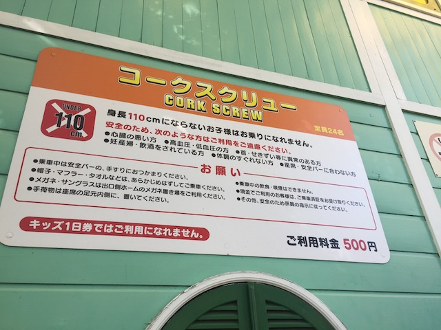
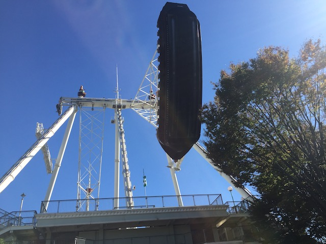

| |

Toshimaen Review

Toshimaen was a fun little park. Now I only took one visit to this park before it closed (partially because I live in freaking California), but I fortunately was able to visit Toshimaen on my Japan trip. And....this was a fun little park. This wasn't a major high priority park for me when on my trip. It was an optional park that I may or may not hit. However, I hit it since....it's right in Tokyo and incredibly easy to access. And I'm happy I stopped by to visit. Not only because the park officially no longer exists and I got three credits that I would've otherwise never been able to get. But on top of that, the park itself was actually decent. OK. The park itself had nothing really special. Yes, it is true that Cyclone was much better than I was expecting. But it wouldn't have been enough to really have me go out of my way. Yes, I'm glad that I visited. But putting Cyclone aside, the park was pretty bland and generic. There's a reason I called this park the Elitch Gardens of Japan. Now, this was great for locals in Tokyo. And it was a well run amusement park. Good operations, a decent selection of rides if you're not essentially an expert. But for a coaster enthusiast, there's really nothing aside from Cyclone. Yes, that's good. But I was saying that Toshimaen needed to bring back that old Shuttle Loop or add some other new ride. Unfortunately, they went in the opposite direction and closed the park all together. That's sad. But I should consider myself lucky that I got the chance to visit Toshimaen at all.
Rollercoasters
There is a link to a review of all the roller coasters that once resided at Toshimaen.
Top Coasters
Cyclone Review

Meh Coasters
Corkscrew Review

Kiddy Coasters
Mini Cyclone Review

Flat Rides
Here are all of the flat rides that were at Toshimaen. The most unique flat ride at Toshimaen that I rode would be the parks giant pirate ship. Now a pirate ship is nothing special. They are some of the most common flat rides out there. But in Japan, they have giant pirate ships. Now, I rode the one at Nagashima Spaland, and that was pretty weak. Nothing special about that. It was just a big pirate ship. I've ridden normal pirate ships stronger than that. Wasn't even gonna bother with the Toshimaen one except for....might as well. Got some time to kill. Ride some random rides. Well....this one actually is strong. Like what you think a giant pirate ship would be like. Now that this one is gone, hopefully the other giant pirate ships are strong like the Toshimaen one was, and not weak like Nagashima Spaland's. The troika was cool, but standard. The park also had a breakdance, a flying carpet, a condor, teacups, some chairswings, and a carousel.

Pirate Ships are always better when bigger.
Dark Rides
So Toshimaen may have had some dark rides, depending on what you qualify as a dark ride. I know they had a Haunted House. I'm pretty sure it was a walk through, so some of you aren't counting this. Either way, it probably was decent. I guess I should've done it. But....nope. Oh well. Probably was nothing special.
Water Rides
There is one water ride at Toshimaen. And I bothered to ride it. I never got any photos of it or put it in my Toshimaen update, but I rode their log flume. It was....a decent log flume. Nothing special. Just an ordinary log flume. Meh, but hey. I had fun on it. Though keeping it real, I'm not going to miss this log flume. Especially since I never bothered to get a photo of it.
Water Park
Yep. Not only did Toshimaen have a water park, but it actually had some cool things! Mainly, boat jumping! Yes! Boat Jumping was a ride at their water park! While awesome, I really wish that they just included it in Toshimaen. Because I can tell you. Having Boat Jumping in your park is awesome. A shame that the Boat Jumping here closed. Well, at least it's big in small European parks. So I can just do it there.
Dining
I never ate at Toshimaen. I'm sure no food from here will be missed. Plus, it's in Tokyo. There's tons of good food there.
Theming and Other Attractions
Here are the reviews of all the other stuff at Toshimaen. As far as theming goes, there really was NONE. Toshimaen had the theming of a carnival. The rides are placed on asphalt, there is nothing. Unless you count plastic flowers as theming. I do not. As far as other stuff to do goes, it mostly just seemed like a standard amusement park. Had a couple walk-through rides, as well as a standard Japanese arcade. Also, there seemed to be one of those European Playground with all the big slides. OK, they're not as big. But the playgrounds did look cool. Never checked them out though, which is a bummer. But yeah. Toshimaen wasn't exactly a unique park dying with other options.
In Conclusion
Toshimaen was a fun little park. Did they have anything particuarly interseting or unique? Well....a couple things were cool and fun about the park. Like I said, Cyclone was genuinely a surprisingly good ride. And there were a couple cool and quirky things here. Like I said, the giant pirate ship was pretty good. And if you bothered with their water park, they did have boat jumping, which is a ton of fun, and rare if you're not from Europe. But at the end of the day, it was still a fairly standard amusement park. However, despite that, I'm still glad that I got to visit this park. As while it was fairly generic, it was still run very well. And like I said, Cyclone was surprisingly fun. And it shows how popular this park was with locals since.....this park lasted a LONG time. So long that I remember Toshimaen brought up in a book I read for some Japanese Culture course I took in college. It was interesting coming across that and thinking to myself "I know what that place is. I know where they're talking about." And sure enough, I'd go there 5 years later. Now the park closed for one simple reason. They're planning on building a Harry Potter "theme park" where Toshimaen is in 2023. Though I'm almost certain that this is gonna be a museum just called a theme park for promotional reasons and to give Buzzfeed and excuse to write articles about Tokyo's Harry Potter "Theme Park". Pretty sure this Harry Potter "theme park" isn't gonna be on my next Japan trip itenerary since I'm guessing it'll just be a big museum and I'm not a huge Harry Potter fan. Well, I'd rather have Harry Potter and his friends shout "AVADA KEDAVRA" at Toshimaen than some of the best B&M inverts ever *growls in anger*. Sure, it wasn't anything special, but it was a fun park, and I'm happy I made room for it on my trip and got the chance to visit this place.
Enthusiast FAQs.
*Were there kiddy coaster restrictions? - No. You were able to ride Mini Cyclone.

Tips
*There are plenty of other good theme parks in Tokyo to check out.
Location
Nerima, Tokyo, Japan
Theme Park Category:
Small Park
Last Day Visited
November 15, 2018
Video
I never shot enough video for a Toshimaen video. Not even a short crappy one. And since the park is gone, one will never be built.
Complete Update List
2018
JAPAN 2018!!! =)
Here's a link to the Wikipedia page for Toshimaen since....the website is gone now along with the park.
Home
|